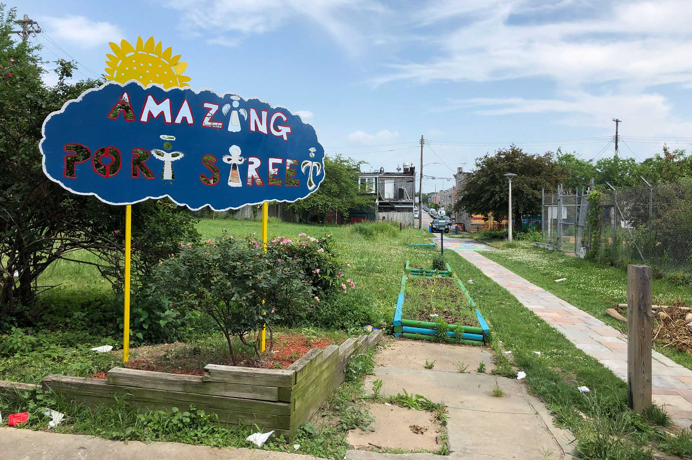

Heat And Inequality
STORY BY: IAN ROUND, JAZMIN CONNER, JERMAINE ROWLEY AND SANDY BANISKY
Heat radiates from the asphalt and concrete that cover the streets, the sidewalks, the alleys, even the tiny yards behind the homes in the East Baltimore neighborhood of McElderry Park. Trees are scarce. And air doesn’t move much when it comes up against block after block of rowhouses.
So as a dangerous 11-day heat wave tormented the city in July, the hottest month ever recorded on the planet, fewer and fewer residents were going outside.
“Can’t even put your head out the door,” said Tammy Jackson, 48, on a day when the temperature outside hit 100 degrees Fahrenheit and 92 degrees in her home. “This is too much. Oh Lord, this is too much.”
But it is going to get worse. In McElderry Park and around the world, in communities rich and poor, downtown and in the suburbs, weather disasters loom. And experts are using language ever more dire.
“The single greatest threat from climate change to people in cities is extreme heat,” said Jad Daley, president and CEO of American Forests, a nonprofit organization dedicated to preserving forests and planting trees.
In July, Anchorage, Alaska, recorded 90 degrees for the first time. Europe suffered through record temperatures, with Paris hitting 109. The heat moved across Scandinavia and into Greenland, where scientists said it speeded the melting of Arctic ice that would increase flooding in coastal cities — including Baltimore.
Average annual temperatures in Baltimore have gone up more than 3 degrees over the last century, nearly twice as much as the rest of the country.
And the planet’s warming has gained momentum, say researchers who estimate the number of very hot days in Baltimore could increase six-fold by the middle of the century.
More and more people, including Del. Robbyn Lewis, who represents parts of East Baltimore, are replacing the words “climate change” with stronger language.
Cities, crowded and paved over, already feel the impact of climate change, with poorer air quality and streets, highways and bridges damaged by storms. But certain neighborhoods will continue to feel the effects of extreme temperatures more than others.
Researchers at Portland State University in Oregon and the Science Museum of Virginia have mapped these areas, called urban heat islands, and data shows that temperatures here and in surrounding neighborhoods can run 8 degrees hotter than in communities that have more trees and less pavement.